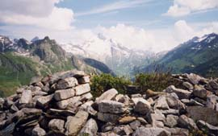
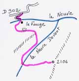

Observatoire (2106 m)

Départ : la Fauge (1790 m)
Aller : 3,1 km, +336 et - 40 m, 72 min
Retour : 3,1 km, + 40 et - 336 m, 55 min
Difficulté : E
Période : juillet - septembre
Remarque : itinéraire non classique, non balisé.
Bibliographie : -

Il ne faut pas traverser les enclos du chalet de la Fauge (alpage).
Démarrer plus haut, au premier lacet à D du tour du Beaufortain, traverser puis contourner une dépression. On rejoint ainsi au pied de la falaise la sente qui monte à un éperon (1850 m), traverse horizontalement vers le ruisseau Neuva devant et remonte sa rive gauche. A 2030 m, on rejoint un sentier menant à la ruine circulaire de l’Observatoire. Belle vue sur le col de la Seigne (le but de cet observatoire militaire qui date du début du XXe siècle).